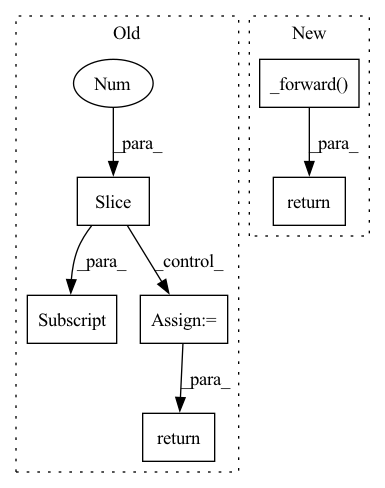

Pattern ID :38862

Before Change
def forward(self, preds: Tensor, labels: Tensor) -> Tensor:
// preds in shape [B, C, H, W] and labels in shape [B, H, W]
if preds.shape[2:] != labels.shape[1:]:
preds = F.interpolate(preds, size=labels.shape[1:], mode="bilinear", align_corners=False)
n_min = labels[labels != self.ignore_label].numel() // 16
loss = self.criterion(preds, labels).view(-1)
loss_hard = loss[loss > self.thresh]
if loss_hard.numel() < n_min:
loss_hard, _ = loss.topk(n_min)
return torch.mean(loss_hard)
class Dice(nn.Module):
After Change
def forward(self, preds, labels: Tensor) -> Tensor:
if isinstance(preds, list):
return sum([w * self._forward(pred, labels) for (pred, w) in zip(preds, self.aux_weights)])
return self._forward(preds, labels)
class Dice(nn.Module):
def __init__(self, delta: float = 0.5, aux_weights: list = [1, 0.4]):
In pattern: SUPERPATTERN
Frequency: 3
Non-data size: 6
Instances
Fragment ID: 110933740
Project Name: sithu31296/semantic-segmentation
Commit Name: b68900992fb24dd5166b2b34e3d35d19493d747d
Time: 2021-08-21
Author: sithu31296@gmail.com
File Name: utils/losses.py
M Class Name: OhemCrossEntropy
N Class Name: OhemCrossEntropy
M Method Name: forward(3)
N Method Name: forward(3)
M Parent Class: nn.Module
N Parent Class: nn.Module
M File Name: utils/losses.py
N File Name: utils/losses.py
M Start Line: 25
M End Line: 37
N Start Line: 46
N End Line: 49
'>
Before Change
def forward(self, preds: Tensor, targets: Tensor) -> Tensor:
// preds in shape [B, C, H, W] and targets in shape [B, C, H, W]
if preds.shape[2:] != targets.shape[2:]:
preds = F.interpolate(preds, size=targets.shape[2:], mode="bilinear", align_corners=False)
tp = torch.sum(targets*preds, dim=(2, 3))
fn = torch.sum(targets*(1-preds), dim=(2, 3))
fp = torch.sum((1-targets)*preds, dim=(2, 3))
dice_score = (tp + 1e-6) / (tp + self.delta * fn + (1 - self.delta) * fp + 1e-6)
dice_score = torch.sum(1-dice_score, dim=-1)
// adjust loss to account for number of classes
dice_score = dice_score / targets.shape[1]
return dice_score.mean()
After Change
def forward(self, preds, targets: Tensor) -> Tensor:
if isinstance(preds, list):
return sum([w * self._forward(pred, targets) for (pred, w) in zip(preds, self.aux_weights)])
return self._forward(preds, targets)
'>
Fragment ID: 110933741
Project Name: sithu31296/semantic-segmentation
Commit Name: b68900992fb24dd5166b2b34e3d35d19493d747d
Time: 2021-08-21
Author: sithu31296@gmail.com
File Name: utils/losses.py
M Class Name: Dice
N Class Name: Dice
M Method Name: forward(3)
N Method Name: forward(3)
M Parent Class: nn.Module
N Parent Class: nn.Module
M File Name: utils/losses.py
N File Name: utils/losses.py
M Start Line: 48
M End Line: 62
N Start Line: 77
N End Line: 80
'>
Before Change
// @jit
def forward(self, x):
for i, (w, b) in enumerate(self.params[:-1]):
act = jnp.dot(w, x) + b
x = self._functions[i](act)
final_w, final_b = self.params[-1]
return jnp.dot(final_w, x) + final_b
@property
def layers(self):
After Change
return jnp.dot(final_w, x) + final_b
def forward(self, params, x):
return self._forward(params, x)
@property
def layers(self):
return self._layers
'>
Fragment ID: 110933745
Project Name: dssc-projects/veni
Commit Name: f04cb26555f4b017a5694307ffd3bcd9ca8cb6c1
Time: 2022-05-08
Author: 93731561+dario-coscia@users.noreply.github.com
File Name: jax_forward/net.py
M Class Name: MLP
N Class Name: MLP
M Method Name: forward(3)
N Method Name: forward(2)
M Parent Class: object
N Parent Class: object
M File Name: jax_forward/net.py
N File Name: jax_forward/net.py
M Start Line: 33
M End Line: 39
N Start Line: 41
N End Line: 42